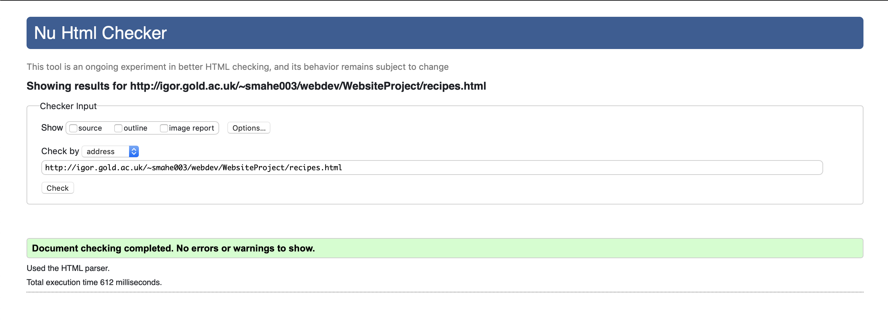

Introduction
My website is all about cooking and expanding your knowledge about the topic. From learning new recipes to finding new equipment to use in the kitchen, the website "Too Many Cooks" allows for the common chef to discover new ways to hone their craft.
I decided to make my website about cooking because I enjoy cooking in my spare time as a hobby.
Background
My target audience is between the age range of 18-35, as well as, any gender. This is mainly because this age range are most likely to browse for food related topics over the internet, and will therefore be the audience that will most likely view my website.
This is one type of relevant stakeholder as they will show interest over this topic as anyone can cook and it is essential to those in this age range. Most of this target audience may be on a limited budget so they may rely on finding recipes/kitchen equipment on this website.
My inspirations when creating the website solely came from looking at other food websites.
FOOD52: This was the main inspiration for my website. This website gave me the ideas for certain pages such as, living and travel. Moreover, I used some of their articles as part of my website as they were insightful and good reads. I was inspired by the home page and tried to re-create a similar style for the home page of "Too Many Cooks".
Serious Eats: This website gave me the idea of the product page. Moreover, the way I implemented the buttons in the shop was inspired by the way they used buttons in their shop.
FineCooking: This website gave me the idea of the use of videos. I incorporated the idea of videos on the "Too Many Cooks" homepage as it was an idea of mine to also include video recipes. FineCooking inspired me in terms of how to go about doing this.
Planning
My structure for my home page, as stated above, was mostly inspired from the website FOOD52. This is because it is a common structure used by food websites.
For the rest of the pages, I tried incorporating a common blog-type structure. These pages serve as platforms for people to share their ideas that are related to the topic of the page, and as such I thought the use of a blog-type structure would be the most suitable.
My website is accessible by standard users of the internet.
I checked a local version of the recipe webpage. As there are no problems, this means my website is accessible by the visually impaired. (Evidence above)
The website (in it's current state) does not require the use of a keyboard. All you need is a mouse to access anything available on this website. This could change however if used in a future project.
Simple: When creating my website, I decided to focus on what was important. I did not want to over-complicate my website as it would take away from the user experience in terms of how I would ideally like them to interact with my website.
Familiar: As the structure of my website is widely common over blog websites and other food websites, visitors will already know how to explore my website.
Consistent: "Too Many Cooks" has a consistent structure throughout. This was considered in order to keep the mind of the visitor at ease as they will get used to the layout of the website once exploring one page.
Implementation
Bootstrap framework: I got the idea of using Bootstrap from the PDF document, as I became curious once reading it as a suggestion. I watched a few videos about the Bootstrap framework and this helped me use the framework to construct the website in the way I wanted to create it. As I created each webpage, the manipulation of the framework became easier to achieve as I was becoming more accustomed to using it.
Modal: I got the idea to use a Modal from experiencing pop-ups on other food websites. In my opinion, the modal was the hardest thing to make work on my website. Despite watching a lot of YouTube tutorials I could never get it to work. I then decided to use the modal on the Bootstrap website, which worked. I modified this in order to get it to work in the way I wanted it, e.g. only using one button in the footer, the example I modified had two buttons.
Button (navigation): I got the idea to use a button from the Serious Eats website, as they used buttons as a form of navigation in their shop. The button (used for the shop) on the other hand was quite easy to incorporate. This is due to the prior creation of the scroll-to-top button which I mostly used as a basis for this.
My website uses the Bootstrap framework, the tilt.js library and icons from Google Fonts.
Evaluation
The image tilt effect.
The page structure.
The buttons. (navigation and scroll)
The navigation bar. I made the navigation bar simple, if I were to do it again I would probably try and add some form of animation so the navigation bar would stand out more.
The modal. If I had more time I would try and figure out how to make the modal more interactive, for example allowing the user to enter their e-mail address in order to receive a newsletter from the website.
Implementing a search engine. Even though this is something I haven't added, I feel like it would improve the overall standard of my website, as visitors can search for what they are interested in, rather than having to browse and find what they are looking for. However, I do not know how I would implement it, so if I had more time I would try to learn how to.
Reference
[1] G. Roge, 'tilt.js Reference', 2016. [Online]. Available: https://gijsroge.github.io/tilt.js/. [Accessed: 2- Jan- 2020]. -> Used for image tilt effect.
[2] getbootstrap.com/, 'Bootstrap Reference', 2019. [Online]. Available: https://getbootstrap.com/docs/4.3/getting-started/introduction/. [Accessed: 2- Jan- 2020]. -> Used bootstrap framework.
[3] getbootstrap.com/, 'Bootstrap Modal', 2019. [Online]. Available: https://getbootstrap.com/docs/4.0/components/modal/. [Accessed: 3- Jan- 2020]. -> Used to help construct my modals.
[4] getbootstrap.com/, 'Bootstrap Button', 2019. [Online]. Available: https://getbootstrap.com/docs/4.0/components/buttons/. [Accessed: 3- Jan- 2020]. -> Used to help construct my buttons.
All images and videos used are free and from the internet, and do not require permission to reuse.
Appendices
Home Wireframe
Recipes Wireframe
Products Wireframe

Living Wireframe
Travel Wireframe
Home Validation
Recipes Validation
Products Validation
Living Validation
Travel Validation